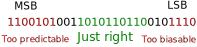
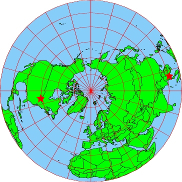

<!doctype html>
<html lang="en">
  <head>
    <meta charset="utf-8">

    <title>ephemerand</title>

    <meta name="author" content="Doug Hoyte">

    <meta name="apple-mobile-web-app-capable" content="yes" />
    <meta name="apple-mobile-web-app-status-bar-style" content="black-translucent" />

    <meta name="viewport" content="width=device-width, initial-scale=1.0, maximum-scale=1.0, user-scalable=no, minimal-ui">

    <link rel="stylesheet" href="../reveal.js/css/reveal.css">
    <link rel="stylesheet" href="../reveal.js/css/theme/black.css" id="theme">

    <!-- Code syntax highlighting -->
    <link rel="stylesheet" href="../reveal.js/lib/css/zenburn.css">

    <!-- Printing and PDF exports -->
    <script>
      var link = document.createElement( 'link' );
      link.rel = 'stylesheet';
      link.type = 'text/css';
      link.href = window.location.search.match( /print-pdf/gi ) ? '../reveal.js/css/print/pdf.css' : '../reveal.js/css/print/paper.css';
      document.getElementsByTagName( 'head' )[0].appendChild( link );
    </script>

    <!--[if lt IE 9]>
    <script src="../reveal.js/lib/js/html5shiv.js"></script>
    <![endif]-->

    <style>
      .reveal .slides h1, .reveal .slides h2, .reveal .slides h3 {
        text-transform: none;
      }

      .two-column {
        display: flex;
        flex-wrap: wrap;
      }

      .two-column em {
        margin: 20px;
      }
    </style>
  </head>

  <body>
    <div class="reveal">
      <div class="slides">

<!------------------------------------------------------->


<section data-markdown><script type="text/template">

# ephemerand

Doug Hoyte

</script></section>


<section data-markdown><script type="text/template">

## Problem

How to generate random numbers in decentralized (adversarial) environment

* **Unpredictable**: Nobody should be able to predict the number in advance
* **Unbiasable**: Nobody should be able to influence number

</script></section>


<section data-markdown><script type="text/template">

## Other Approaches

* PoW Block hashes (miners can bias)
* Commit-reveal (last revealer bias)
* VDF (trusted setup, delay needs tuning)
* NIST random beacon (must trust NIST)
* Financial data/lottery numbers (impractical)

</script></section>


<section data-markdown><script type="text/template">

## Global Positioning System

Once per day the US military measures attributes of the GPS system:

* Satellite ephemeris (information about orbit)
  * Inclination
  * Eccentricity
  * Argument of perigee
* Clock skew
* Ionospheric noise

</script></section>


<section data-markdown><script type="text/template">

## Almanac

Compiled into an **almanac**

* Broadcast via the GPS satellites
  * Download in 20 minutes from anywhere on earth's surface
* Published on government websites (historical data back to 1990)
* Available via cell-phone network (aGPS)
 
</script></section>


<section data-markdown><script type="text/template">

## Cheap, common hardware


Less than $10

</script></section>


<section data-markdown><script type="text/template">

## Unpredictable (?)

* 31 active satellites
* 10 parameters per satellite
* Being able to predict far in advance would be major applied physics break-through

</script></section>


<section data-markdown><script type="text/template">

## Unbiasable (?)

* The US military in theory can influence, however:
  * It would be easy to detect (everyone's GPS readings would be wrong)
  * Economic impact would be massive
* Potentially could mix in data from Europe/Russia/China/India satellites

</script></section>


<section data-markdown><script type="text/template">

## The sweet spot



</script></section>


<section data-markdown><script type="text/template">

## ephemerand

* C++ command-line app
* Uses ublox 6/7/8 GPS chipset
* Collects full almanac and hashes with BLAKE-2b

</script></section>


<section data-markdown><script type="text/template">

    $ ephemerand run --verbose
    # Connection OK. SW: 1.00 (59842) HW: 00070000
    # Sat #32 (1/31) [2044.147456 -> 24166000920924000054fd00b80da1006e9413009f3b96006a77f500b400e700]
    # Sat #31 (2/31) [2044.147456 -> 9a4b5f00a20b24000046fd00350ca1004dbe3f0061b9ff009a905600fcff0600]
    # Sat #30 (3/31) [2044.147456 -> af1e5e0032ff24000034fd007e0ca100dd604000c7e4840014796700c8fff700]
    ...
    # Sat #3 (29/31) [2044.147456 -> b60f4300260d24000041fd000d0ca100ef44e900ac6118005ca358000c001800]
    # Sat #2 (30/31) [2044.147456 -> e69a42002b0724000046fd00ea0ca1002b0bbc00e037b8007b188c00bcffea00]
    # Sat #1 (31/31) [2044.147456 -> 8e454100c91424000053fd00de0ca100bbc7be00bfd81b008ff97f00d4ffe800]
    rand 0936e456684b04edd449bad5c8aba51e28a5adc98d4f20e560af668644f23665 2044.147456 1552323456

</script></section>


<section data-markdown><script type="text/template">

Tested: Same random numbers were generated in Canada and Thailand



</script></section>


<section data-markdown><script type="text/template">

## Other benefits

* No internet required
  * Same random numbers used even with network partitions
* Every ephemerand node also has very accurate UTC clock available

</script></section>


<section data-markdown><script type="text/template">

# Thank you

This presentation:<br/>
[https://hoytech.github.io/presentations/ephemerand/](https://hoytech.github.io/presentations/ephemerand/)

</script></section>


<!------------------------------------------------------->


      </div>

    </div>

    <script src="../reveal.js/lib/js/head.min.js"></script>
    <script src="../reveal.js/js/reveal.js"></script>

    <script>

      // Full list of configuration options available at:
      // https://github.com/hakimel/reveal.js#configuration
      Reveal.initialize({
        controls: true,
        progress: true,
        history: true,
        center: true,

        transition: 'none', // none/fade/slide/convex/concave/zoom

	math: {
          mathjax: '../lib/MathJax/MathJax.js',
          config: 'TeX-AMS_SVG-full',
	},

        // Optional reveal.js plugins
        dependencies: [
          { src: '../reveal.js/plugin/markdown/marked.js', condition: function() { return !!document.querySelector( '[data-markdown]' ); } },
          { src: '../reveal.js/plugin/markdown/markdown.js', condition: function() { return !!document.querySelector( '[data-markdown]' ); } },
          { src: '../reveal.js/plugin/highlight/highlight.js', async: true, callback: function() { hljs.initHighlightingOnLoad(); } },
          { src: '../reveal.js/plugin/math/math.js', async: true },
        ]
      });

    </script>

  </body>
</html>
